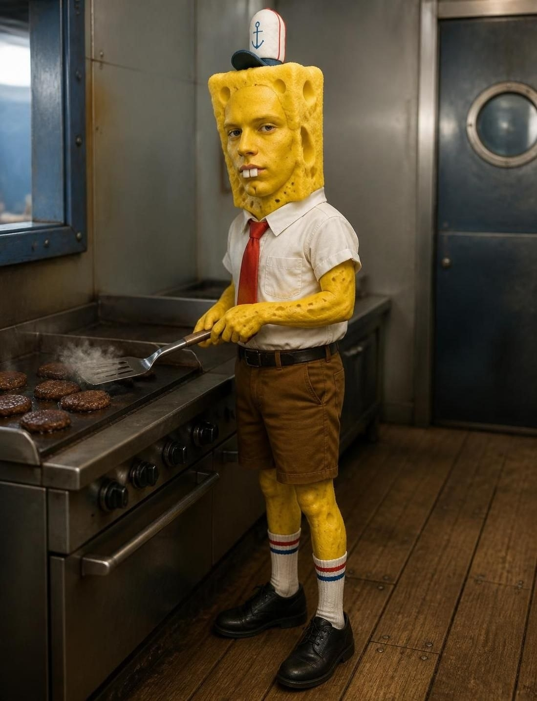

savingsПортрет печатается
Мистер Крабс (Валера)
savingsВладелец / Генеральный директор
Основал ресторан после удачной сделки с банкой крабов. Считает каждую копейку, но для гостей ничего не жаль (почти). Слышит звон монет за 300 метров.

chef_hatПортрет печатается
Лари Марук
chef_hatШеф-повар
Пришёл из мишленовского ресторана Бикини Боттом-Сити. Знает формулу наизусть, но поклялся молчать. Ведёт мастер-классы по су-вид. Учит Грини Боба боксу на мышке.

point_of_saleПортрет печатается
Ега Сквидвард
point_of_saleКассир / Администратор
Играет на кларнете по субботам (гостям лучше не слушать). Пробивает заказ за 4 секунды, не отрываясь от книги «Скука и безысходность». Мечтает уволиться 14 лет.

scienceПортрет печатается
Витя Планктон
scienceТехнолог / Конкурент
Официально — технолог по контролю качества. Неофициально — пытается украсть формулу с 2024 года. Пока безуспешно. Его карен — голограмма в банке.

computerПортрет печатается
Дюба Карен
computerСистемный администратор
Живёт в мониторе у Планктона, но помогает нам с IT. Пишет код, настраивает Wi-Fi и следит за камерами. Шутит на 3 из 10. Мы её любим.

favoriteПортрет печатается
Масик Патрик
favoriteМенеджер по счастью
Официально не знает, чем занимается. Неофициально — делает так, чтобы каждый гость уходил с улыбкой. Живёт под камнем рядом. KPI — обнимашки в смену.

local_fire_departmentПортрет печатается
Грини Боб
local_fire_departmentГлавный повар-гриль
Готовит с 04:00. «Я готов! Я готов! Я готов!» — его мантра. 200 котлет в час с улыбкой. Лучший сотрудник месяца 24 месяца подряд. Рекорд, который никто не побьёт.

ecoПортрет печатается
Борисенков Сенди
ecoЭксперт по экологии и орехам
Белка из Техаса, учёный-биолог. Следит, чтобы ингредиенты добывались экологично. Создала ореховый соус-дип к Коралловым полоскам. Любит карате и науку.